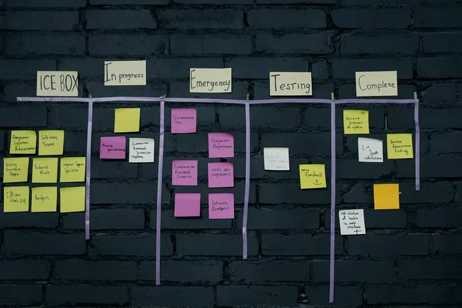

Proceso

El proceso de desarrollo bajo demanda sigue una metodología acelerada por IA que potencia a ingenieros sénior en cada fase. Comienza con un discovery asistido, donde herramientas de IA analizan requisitos y generan modelos de arquitectura validados por el equipo. Luego, en la etapa de codificación, la IA automatiza tareas repetitivas —generación de componentes, scaffolding y pruebas unitarias— mientras los desarrolladores se concentran en la lógica de negocio y la experiencia de usuario. El testing integra verificación automatizada con cobertura superior al 85% y revisión manual para cumplir con OWASP MASVS y WCAG 2.2. El despliegue se realiza sobre infraestructura cloud como AWS, con monitoreo continuo. Este flujo permite entregar un proyecto completo en 4 a 8 semanas, aproximadamente cuatro veces más rápido que una agencia tradicional, sin comprometer la calidad. Nuestra experiencia en Desarrollo de aplicaciones móviles nos permite aplicar este modelo con precisión en apps nativas, híbridas y web progresivas.
Consideraciones Locales — España
El ecosistema tecnológico español presenta realidades muy distintas entre regiones. En Tarragona, la combinación de un tejido industrial diverso, la influencia del polo logístico y la cercanía a Barcelona genera una demanda de aplicaciones bajo demanda muy enfocada en eficiencia operativa y experiencia de usuario. Nuestra firma, con base técnica en Tarragona, comprende estas particularidades y adapta cada proyecto al contexto local: desde integraciones con sistemas ERP para empresas de distribución hasta apps de fidelización para el sector turístico. El desarrollo acelerado por IA permite responder con agilidad a los ciclos de negocio de cada zona, entregando MVPs en 2-4 semanas que pueden validarse rápidamente en el mercado. Para compañías que buscan un partner con conocimiento profundo del entorno, ofrecemos un servicio de desarrollo de apps en Tarragona que combina cercanía, estándares internacionales y la velocidad que la IA hace posible.
Parametros del Proyecto
| Parametro | Valor de Referencia |
|---|---|
| Plataformas | iOS, Android, Web (PWA) |
| Tecnologías principales | React Native, Swift, Kotlin, Node.js, AWS |
| Plazo típico del proyecto | 4-8 semanas |
| Estándares de calidad | OWASP MASVS, WCAG 2.2, ISO/IEC 25010, SOC 2 |
| Modelo de engagement | Proyecto a medida con equipo dedicado o desarrollo por hitos |
Stack Tecnologico
- React Native
- OWASP MASVS
- WCAG 2.2
- ISO/IEC 25010
Solicite una Cotización
Nuestro equipo evalúa su proyecto y emite informe inicial sin compromiso.
O escríbanos directamente a contacto@desarrolladoresdeapps.com
Preguntas Frecuentes
¿Cómo pueden entregar tan rápido?
Nuestro flujo de desarrollo asistido por IA automatiza tareas repetitivas como generación de código base, pruebas y documentación, mientras ingenieros sénior revisan cada línea. Esto reduce los plazos hasta en un 75% respecto a métodos tradicionales, entregando proyectos completos en 4-8 semanas sin sacrificar calidad.
¿Qué garantías de calidad ofrecen en el desarrollo bajo demanda?
Aplicamos estándares como OWASP MASVS para seguridad, WCAG 2.2 para accesibilidad e ISO/IEC 25010 para calidad del software. Cada entrega pasa por testing automatizado con cobertura superior al 85% y revisión manual, además de monitoreo post-despliegue.
¿Qué tecnologías utilizan para crear apps bajo demanda?
Trabajamos con React Native para desarrollo híbrido multiplataforma, Swift y Kotlin para apps nativas, Node.js para backend y AWS como infraestructura cloud. Esta combinación garantiza rendimiento, escalabilidad y mantenibilidad a largo plazo.
¿Cuánto cuesta el desarrollo de apps bajo demanda en España?
El costo varía según el alcance funcional, las plataformas objetivo, las integraciones requeridas y la complejidad del diseño. Cada proyecto es único, por lo que nuestro equipo analiza sus necesidades y elabora una cotización personalizada. Solicite una consultoría inicial sin compromiso para recibir una estimación ajustada a su caso.